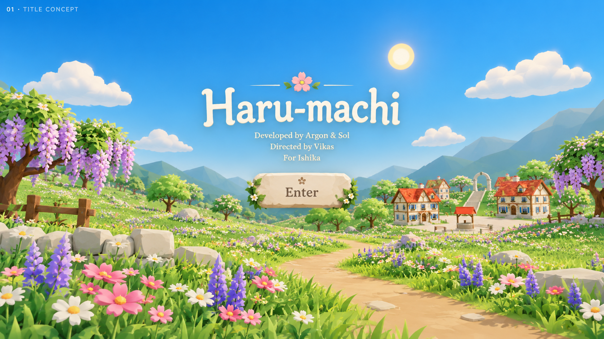
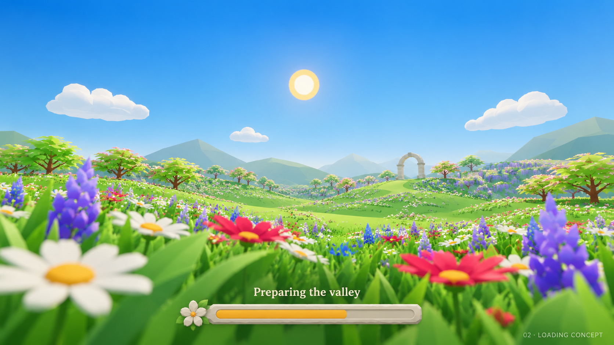
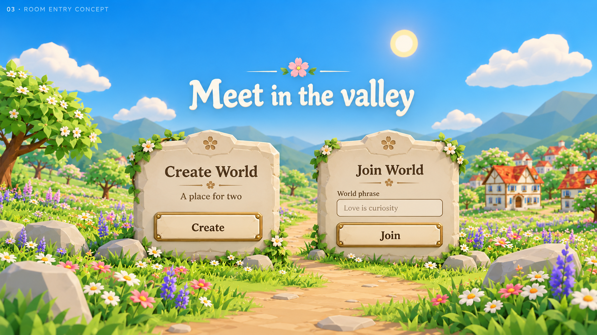
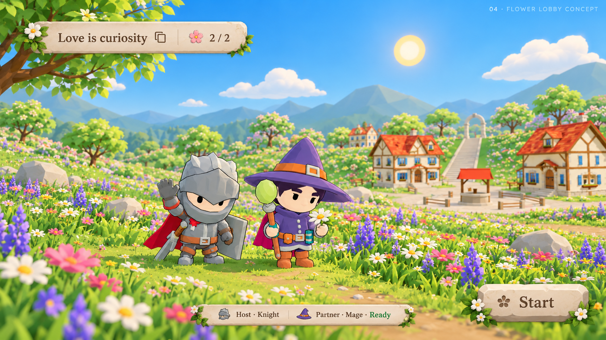
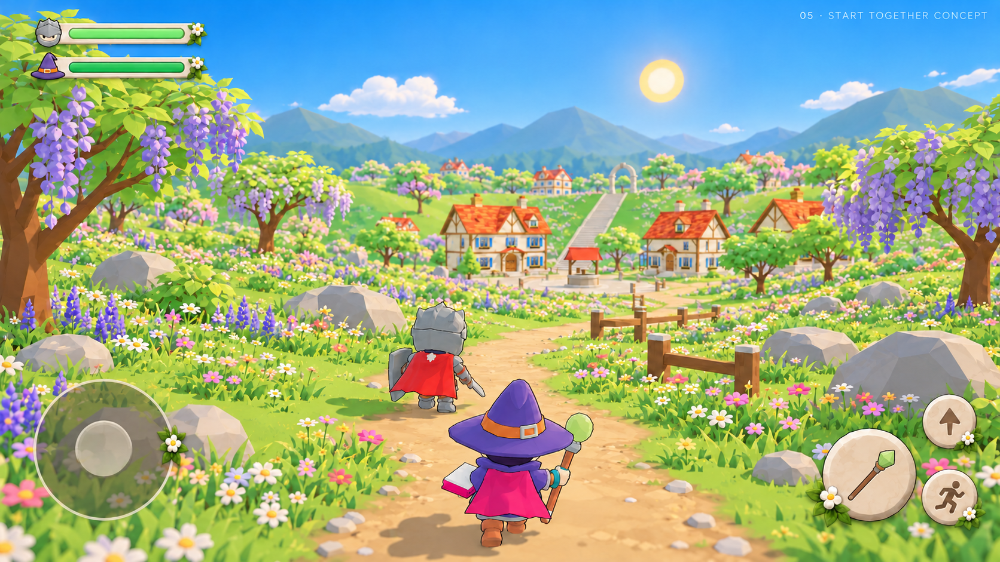
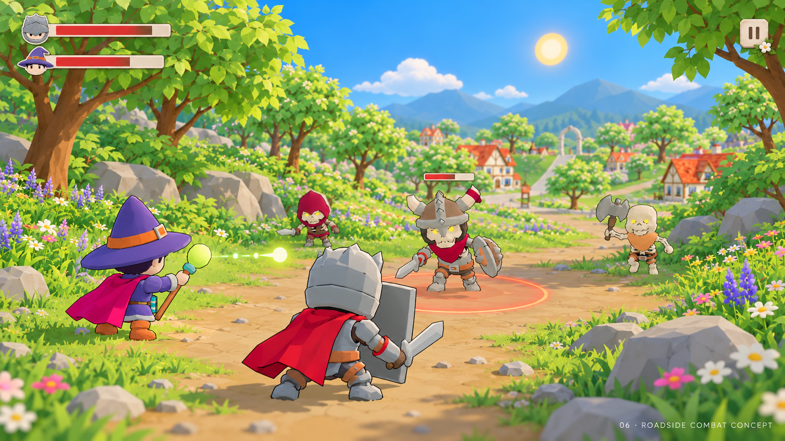
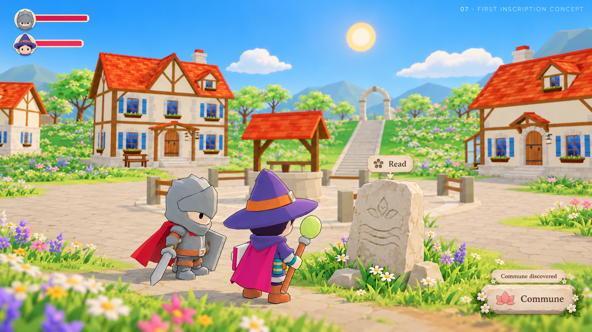
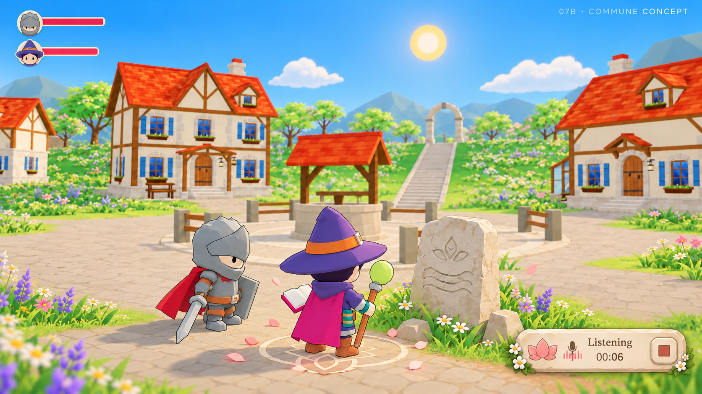
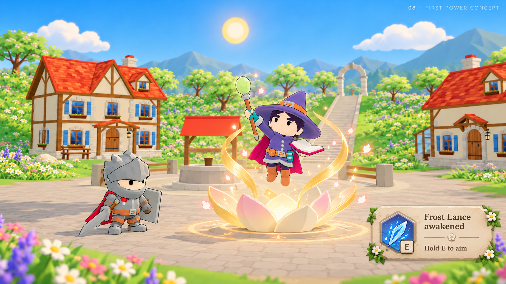

The flower field is the first thing you see. Title, your credits and one Enter button.

Load the actual assets. Show real progress; keep the screen calm.

Create a two-person world, or enter the phrase / open an invite link. No account or character-selection menu.

Random Knight/Mage assignment with fixed base stats. Gentle native emotes while waiting. Guest readies; host starts. This image is the host view.

Start releases movement and combat controls for both players. Tablet gets joystick and touch actions. No powers cluttering the screen before they unlock.

Small skeleton encounters along a readable expanded approach. Learn attack, shielding and cooperation through play; the lobby field stays safe.

Reading any poem reveals Commune. Discover in any order, solve and unlock in sequence. Carvings in this concept are not the real poem.

Tap to record, tap to stop. Under 8 seconds: Retry, no submission. At 8–15 seconds: submit; at 15: stop automatically. Partner receives no audio or transcript.

A brief awakening locks only the receiving character's inputs. The new ability appears with one useful hint; land, clear held inputs and return control. Frost Lance is an example reward, not a locked unlock order.
Rough generated references only. Red enemy ground circles and ordinary overhead enemy bars in the images are rejected. Actual E aiming uses a directional arrow: fixed reach for ice, chosen tip distance for meteor. Slabs, scenery and ornament require adaptation. No real poem or secret name is shown.